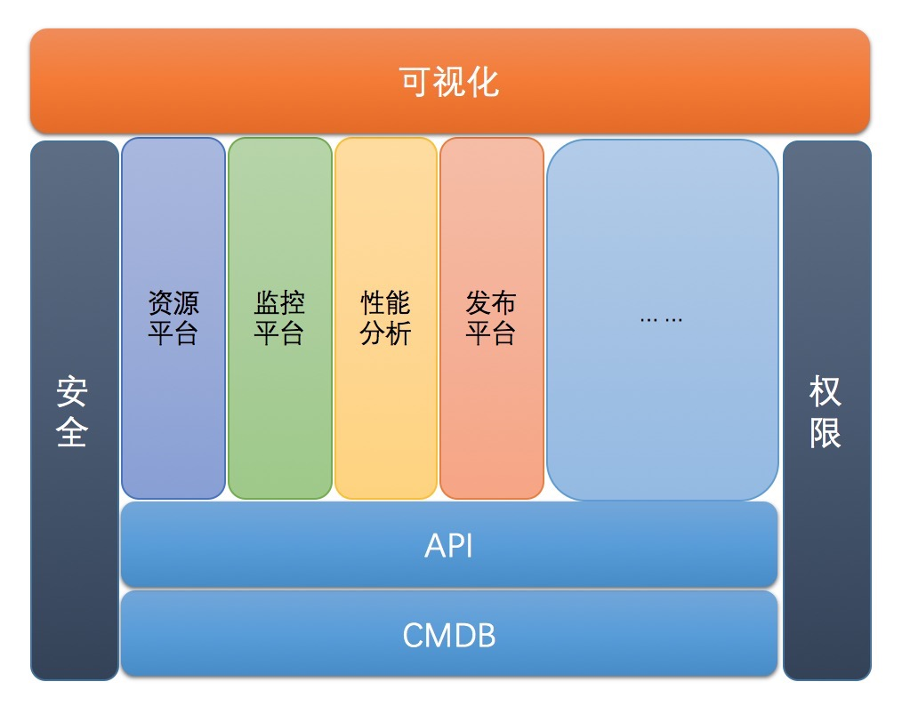

运维自动化班
适合人群
{{ops_intr}}
上课时间
每周六（9:00-18:00）
课程目标
课程结合流行的zabbix、ansible、git等开源框架与工具， 通过深度二次开发定制，结合REST API、运维流程化、平台安全化、运维可视化思想来构造企业级的运维自动化解决方案。学员通过课程学习可掌握如何快速从0构建一套包括监控、自动上线、CMDB、性能分析在内的可扩展运维自动化平台，并为进一步迈向运维开发架构师打下坚实基础
课时安排
最新一期{{actual_time}}号开课，火爆招生中
历时3个月（每周六，13天）
课程费用
面授费用：{{price.ops}}
网络班学费{{price.ops-1000}}（提供课堂视频、多媒体直播、终身免费重听）
讲师介绍
Rock老湿 php开发出身，对运维自动化情有独钟遂转行运维研发，擅长把开发思想引入到运维开发中 。前ganji资深运维开发工程师，参与了自动化基础以及运维平台的建设（包括发布系统，集中计划任务管理系统等），现在知名互联网金融公司担任运维研发负责人，主导运维自动化平台建设。
Panda老湿 前douban运维工程师。参与运维平台的建设.逐步完成运维工程师到运维研发工程师的转变。 之后进入创业公司，引入douban的运维平台思想，完成新公司的自动化运维平台的开发和建设。对运维工程师转运维研发的困惑和痛点深有感触，乐于分享自己转型中的五味杂陈。
课程项目架构图


课表